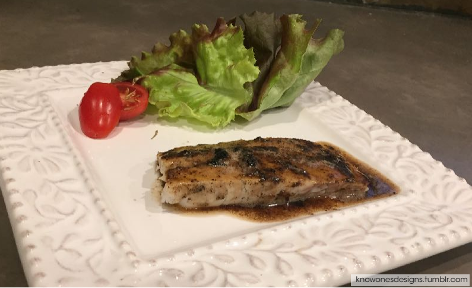

Grilled Wild Barramundi
| 15-30 mins | 15-60 mins | 1-2 |

"Ah, dude, make it quick. I'm so hungry there's a hole in my tummy."
"Talk about back seat fishing."
"Talk about back seat fishing."
Ingredients
|
instructions
- Use a large frying pan on high heat. Pat dry the barramundi steaks and season with salt and pepper on both sides. Add the oil to the pan and bring to almost the smoking point.
- Add the fish steaks in carefully (skin side down if applicable). If there is skin, press firmly on the steaks to keep the skin from curling; this is the key to crispy skin. Shake the pan after 1 minute of cooking to make sure the fish doesn’t stick. Press a finger firmly to the side that is facing up while the fish is still in the pan - when you feel the heat seeping through, flip the fish over carefully using the spatula and cook for another 30 seconds.
- Remove the fish from the pan and place on a plate to rest. To make the sauce, use the same pan to put the butter in and cook until just brown - be careful not to burn the butter. When brown, add the lemon juice and take off the heat. Serve immediately over the plated barra steaks.
- Add a cut grape tomato and red butter lettuce as garnish.
| Creator: KnowOnesDesigns | KnowOnesDesigns | KnowOnesDesigns | KnowOnesDesigns | KnowOnesDesigns | Personal Site |